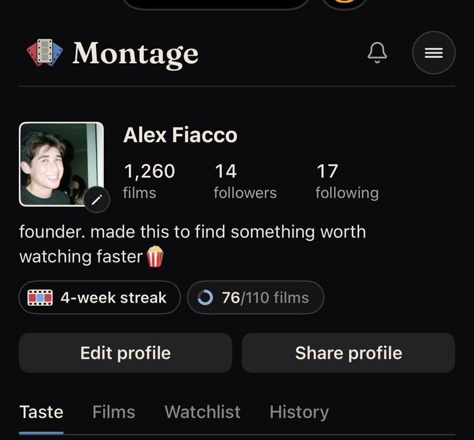
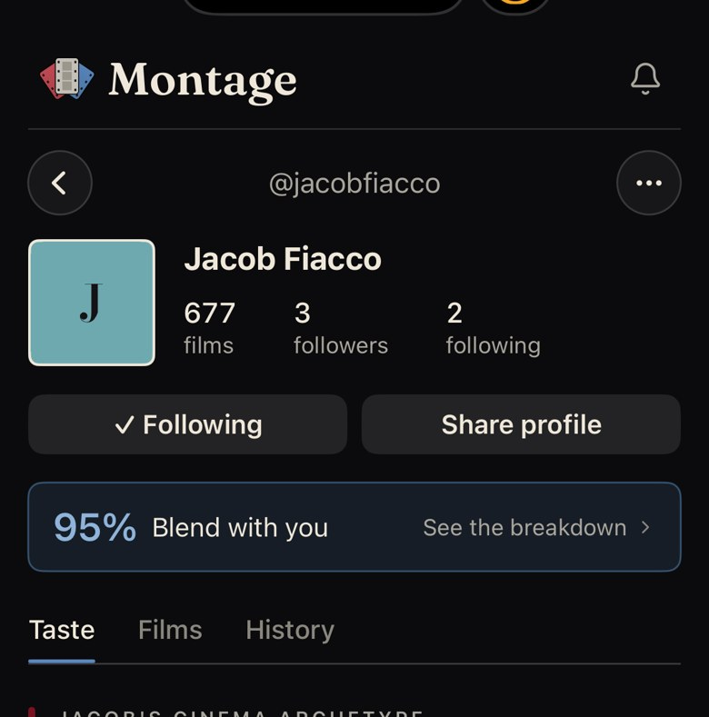

Three different directions, not tweaks. Each one keeps your rules: the cream 1.5pt outline on the photo, numbers in the sans, no "since", no archetype in the header (it opens the Taste tab right below), streak and film goal always visible, and a one-line Blend with no subtext on someone else's page.
Now
Your screenshots: the numbers stacked beside the photo, two full-width buttons, and Jacob's Blend with "See the breakdown".
Now · yours

Now · someone else

1 · Today, refined
Same bones as today. The three numbers become one quiet line under the handle instead of a stacked grid, and the two big buttons become one row of small outlined ones.
Yours
Montage
Alex Fiacco
@alexfiacco
1,260 films·14 followers·17 following
founder. made this to find something worth watching faster 🍿
4-week streak76/110 films
Edit profileShare profile
TasteFilmsWatchlistHistory
Your cinema archetype
Someone else
Montage
J
Jacob Fiacco
@jacobfiacco
677 films·3 followers·2 following
2-week streak41/60 films
FollowShare profile
95%Blend with you›
TasteFilmsHistory
Jacob's cinema archetype
Least change: you already know where everything is. Name in the sans at 20, as today.
The stacked numbers were the Instagram part; as one line they read like a credit.
2 · Name-first
The name leads, set large in Bodoni (the one serif in the header). The photo shrinks to a 56pt square on the right. Everything else is small sans text: one stats line, the bio, and streak and goal inline with their icons, no boxes.
Yours
Montage
Alex Fiacco
@alexfiacco·1,260 films·14 followers·17 following
founder. made this to find something worth watching faster 🍿
4-week streak76/110 films
Edit profileShare profile
TasteFilmsWatchlistHistory
Your cinema archetype
Someone else
Montage
Jacob Fiacco
J
@jacobfiacco·677 films·3 followers·2 following
2-week streak41/60 films
FollowShare
95%Blend with you›
TasteFilmsHistory
Jacob's cinema archetype
Reads like a title card, not a social app: the name is the poster, the photo is a credit.
Streak and goal stay visible as text and still tap; buttons are left-aligned and only as wide as their words.
3 · Card
The identity sits in one quiet panel (photo, name, handle, bio) with streak and goal in its footer. The three numbers are a slim strip fixed to the card's bottom edge, like the stub of a ticket.
Yours
Montage
Alex Fiacco
@alexfiacco
founder. made this to find something worth watching faster 🍿
4-week streak76/110 films
1,260 films14 followers17 following
Edit profileShare profile
TasteFilmsWatchlistHistory
Your cinema archetype
Someone else
Montage
J
Jacob Fiacco
@jacobfiacco
2-week streak41/60 films
677 films3 followers2 following
Follow
95%Blend with you›
TasteFilmsHistory
Jacob's cinema archetype
Most contained: the person is one object; the counts are clearly secondary.
Costs the most height, and a panel above the Taste tab's own panels can feel boxed in.
Decide
1 · Today, refined — smallest change; stats as one line, one row of small buttons.
2 · Name-first — large Bodoni name, 56pt photo, everything else one muted line; least like Instagram.
3 · Card — identity in a quiet panel, stats as a ticket-stub strip.